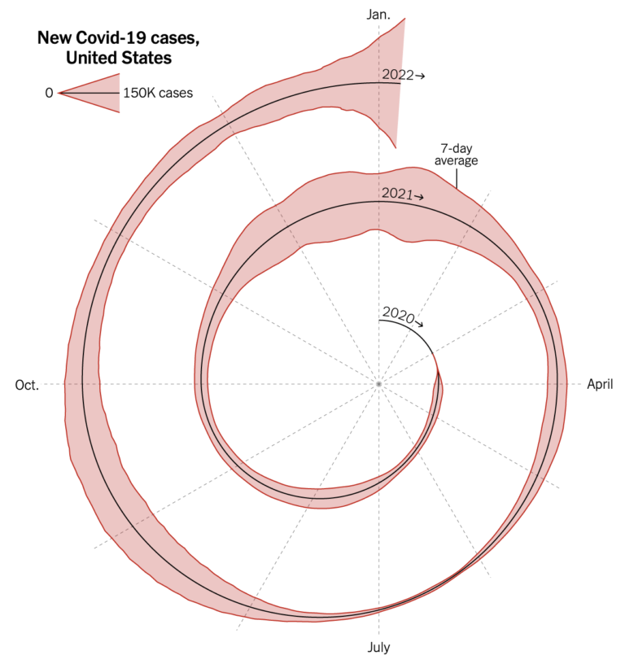
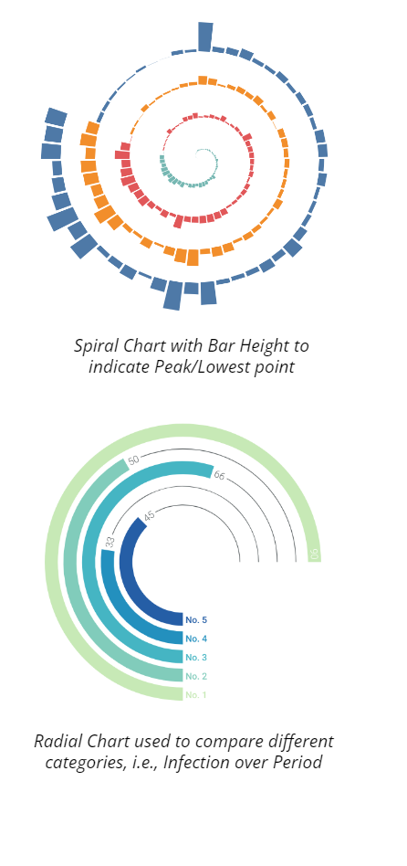
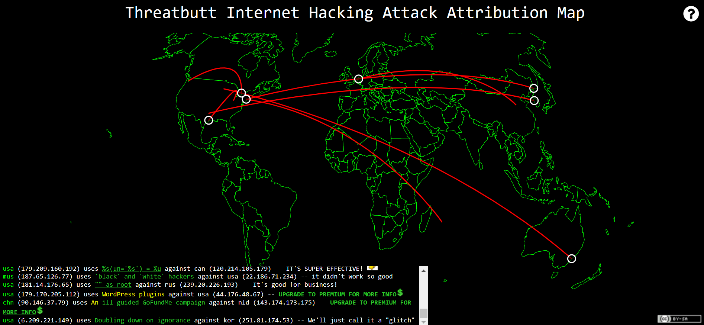
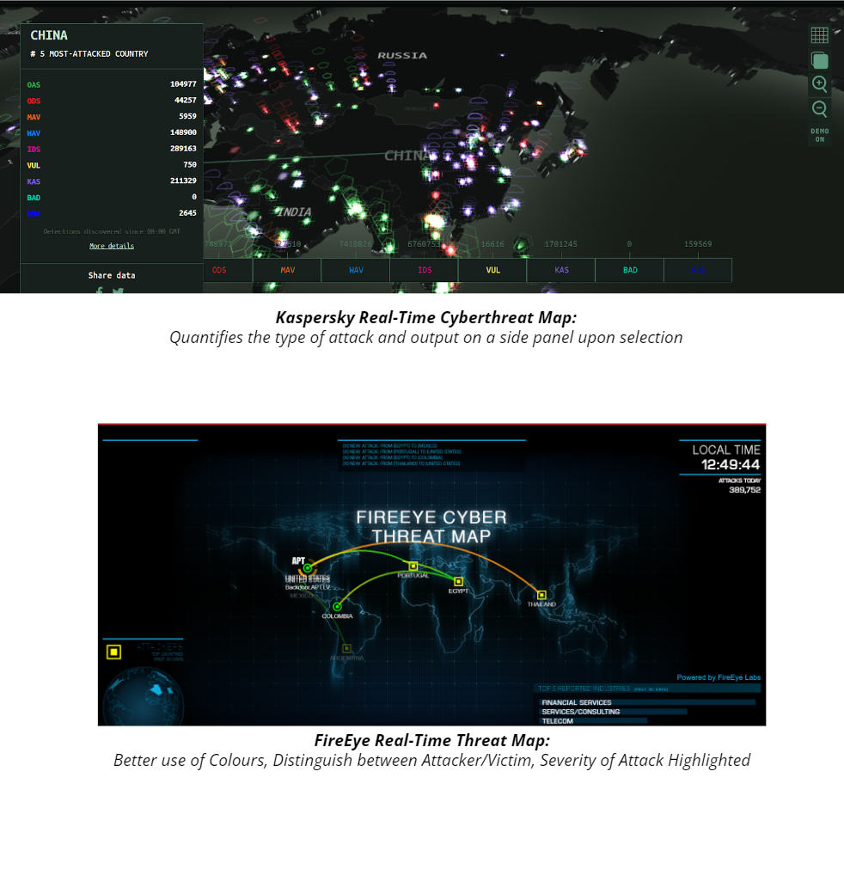

CSC3007 Information Visualization
This box alpha 30 percent. Left sidebar is a sticky element. Right side Contents are scrolling up and down. This background has a parallax effect.
Dream Pulse is a Bootstrap 4.3.1 template designed for your websites. You can modify this layout as you like.
Visualization 1: Coronavirus cases in Spiral Chart

- The spiral chart depicts the number of new Covid-19 cases from the year 2020 to year 2022.
- Designer incorporates all the months of the year, divided into quadrants on the spiral.
- The “black line” in the middle of the spiral is not a discriminator, but it draws the outline of the spiral chart vividly. (I.e., backbone)
- View from clockwise direction
What (Data) - "What Data the User Sees"
- The legend of the chart shows the spike in the number of cases in denominations of 150K but it does not account for other lower denominations.
- The 7-day average shown in the chart is ambiguous.
- The month shown are in every quarter, if the user wants to see a specific month they are required to count the months.
- There are no tooltips provided upon hovering over the visualisation.
Why (Task) - “User Intent to Use Visualization Tools”
-
The designer opted for a Spiral Chart representation, which is effective for a time-series data for Covid-19 cases.
- Characteristics include: Trend; Seasonality (Day-to-Day, Period-to-Period)
- Designer intended to take an artistic route in visualising the covid-19 cases without using a standard linear modelling diagram.
- The months were split across 12 section, each indicating a month. Despite the spatial restrictions, the designer manage to segment parts of the visualisation to provide more information to the audience.
How (Idiom) - “How the visualization idioms are constructed”
- The visualisation uses a single colour to represent the entire data flow.
- The accuracy of how many cases are there in a month is very vague as there is no clear indication of the quantitative data.
- The visualisation uses month as a Separability principle, however it is still difficult on first glance to locate a specific month and year.
-
Expressiveness
-
Effectiveness

-
Solution A
Colours could be implemented to each period to break them up and provide better comparison between each period. -
Solution B
Since the chart is read from the centre of the spiral, there should be a larger indicator of where a user should begin their initial gaze. -
Solution C
The lack of interactivity makes it difficult to drill-down each period’s data points accurately, therefore concepts such as annotation, view manipulation should be implemented. -
Solution D
The legend is vague and meaningless. Instead of an area distribution from the center, a bar chart from the origin allows the designer to do a legend with various heights to account for larger/smaller data points.
Visualization 2: Internet Hacking Attack Attribution Map

- This Internet Hacking Attack Attribution tracks cyber attacks in real time, showing the location and IP address of the source and target of each attack.
- It also adds small bits of commentary to indicate the severity of the each attack: Notes such as “We’ll just call it a glitch” indicate small or minor attacks, while things like “It’s cyber Pompeii!” indicate large or widespread attacks.
What (Data) - "What Data the User Sees"
- The arc line showing in the map only has a red colour, which does not break down the attacks by colour, e.g. red for critical attacks, orange for high severity, blue for medium.
- No “hover-over” details on the arc line.
- The white circle that allows interactivity for user to hover on and view the tooltip. However, the tooltip has a perceived affordance as it disappears at the slightest move of the cursor.
- Live attack details like the software is being used to attack with the source, and destination details was shown in a very unclear text format.
- Users may see the country name while hovering over it on the map but cannot select it to view more details or zoom in or out on the map.
Why (Task) - “User Intent to Use Visualization Tools”
- The designer wants to design a simple retro-style map. The map and the live feed colour and style look more like a "Command Prompt, " making it very cool and unique.
- The designer improve the the user engagement by displaying the severity level for each attack as remark such as "We'll just call it a glitch," indicating small or minor attacks. In contrast, things like "It's cyber Pompeii!" show significant or widespread attacks.
How (Idiom) - “How the visualization idioms are constructed”
- The visualisation uses single color to represent the severity of attack from one country to another.
- The country name displayed in live attack details is in abbreviated form rather than the complete form.
- Tooltips and annotation are present, showing encodings of a specific region of the map. However, the usability of the “hover” status is not consistent as it disappears occasionally.
-
Expressiveness
-
Effectiveness

-
Solution A
Different arc line colours indicate the severity level of the attacks. -
Solution B
Live attacks details can be shown in a clear table format. -
Solution C
Hovering over the arc line reveals information on the source and destination country. -
Solution D
The map can be more interactive by allowing users to pick certain countries to see more attack details on the specific country.